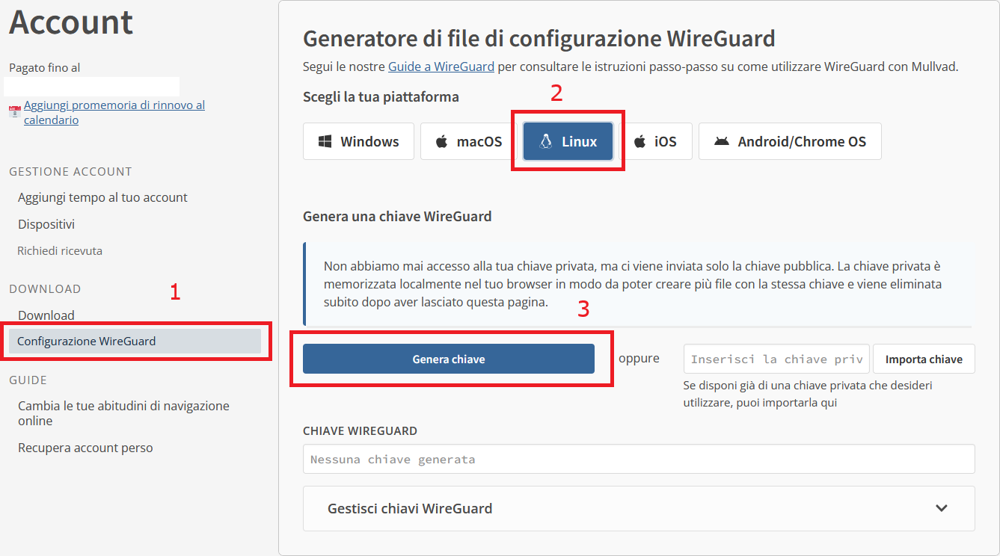
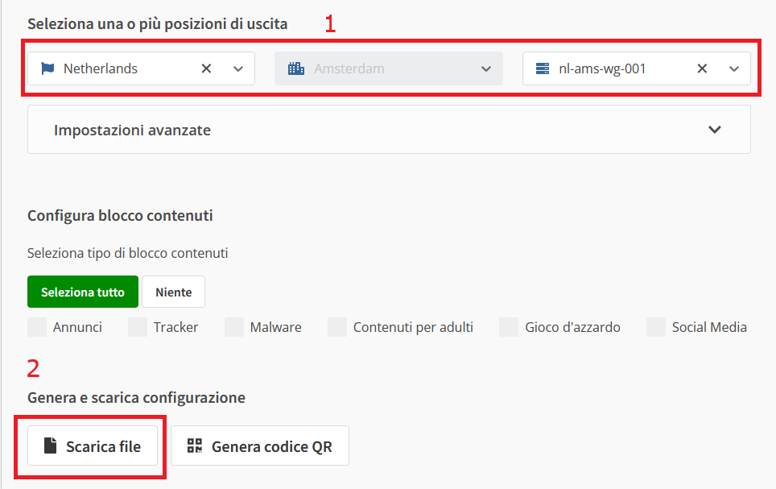
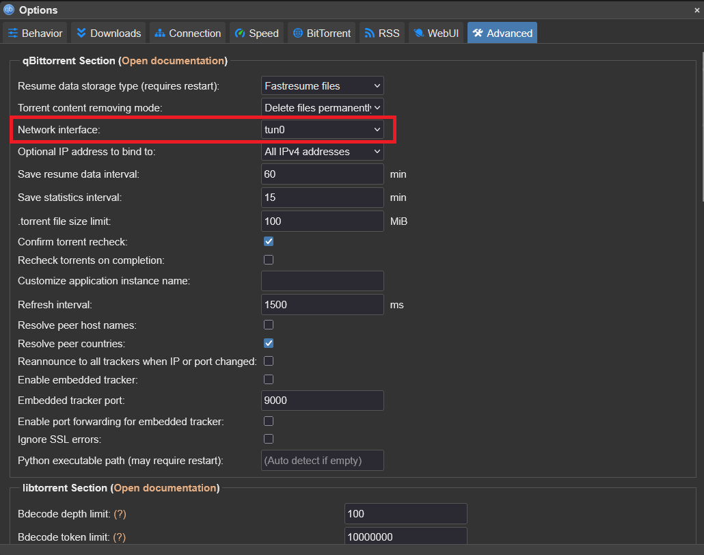
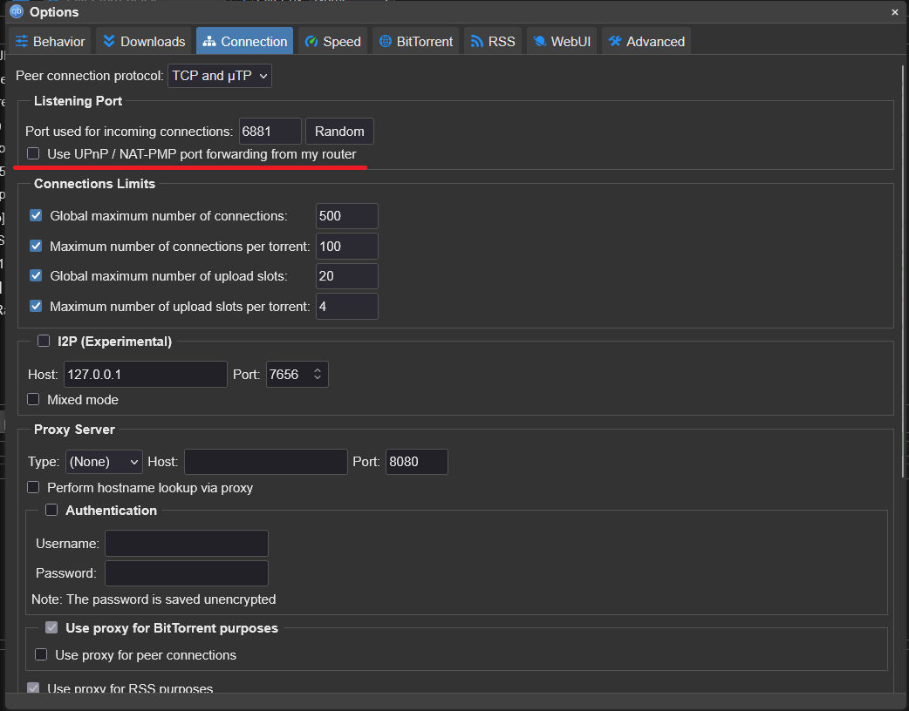
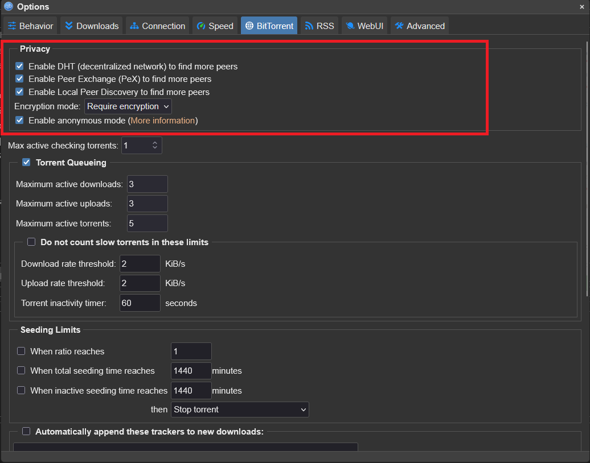
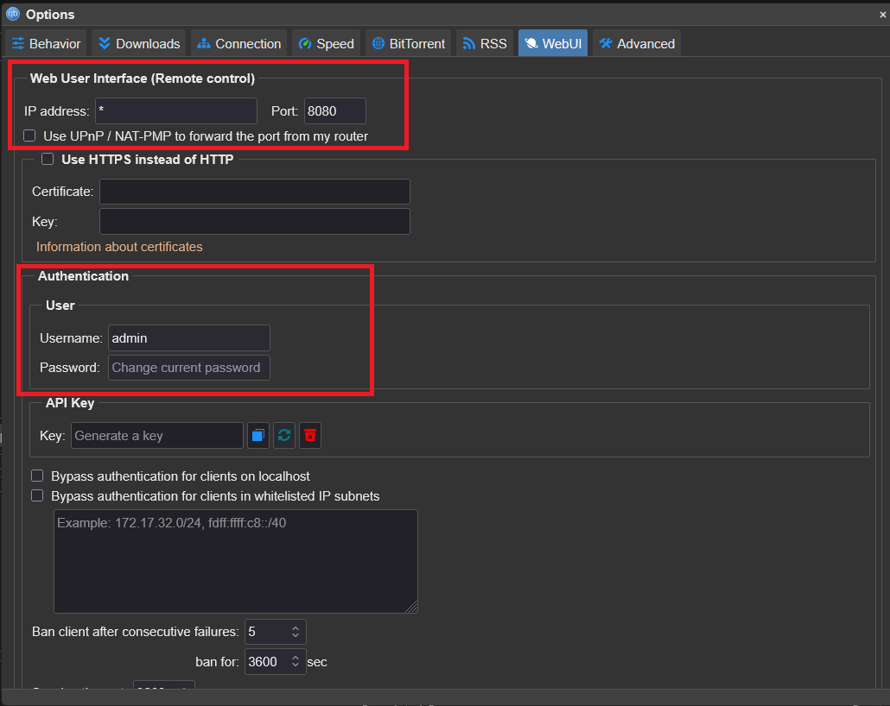

VPN — Gluetun + Mullvad¶
Questa è la sezione più importante per la sicurezza del tuo download. Se hai letto la pagina "Come funziona un torrent", sai già perché serve: il tuo IP reale sarebbe altrimenti visibile a chiunque nello swarm.
Il concetto — Gluetun non è un'app, è un container¶
Mullvad è il servizio VPN (a pagamento, ~5€/mese) a cui ti connetti. Gluetun è il client WireGuard containerizzato che gestisce quella connessione dentro Docker — non serve installare nessuna app VPN separata, né su Windows, né sul sistema operativo del server: Gluetun è il client.
flowchart LR
qBittorrent --> Gluetun
Gluetun --> Mullvad
Mullvad --> InternetqBittorrent non comunica mai direttamente con Internet, tutto il traffico passa prima attraverso Gluetun, che crea un tunnel WireGuard verso i server Mullvad.
Passo 1: Creare una configurazione WireGuard su Mullvad¶
Per utilizzare Mullvad con Gluetun è necessario generare una configurazione WireGuard dal sito ufficiale di Mullvad. Se non hai ancora un account, puoi crearne uno direttamente su Mullvad: a differenza di molti altri servizi VPN, Mullvad non richiede un indirizzo email né una password. Al termine della registrazione ti verrà assegnato un numero account di 16 cifre, che rappresenta l'unico metodo per accedere al tuo account.
Conserva il numero account
Il numero account è l'unica credenziale necessaria per accedere a Mullvad. Se lo perdi e non ne hai una copia, non sarà possibile recuperarlo.
Dopo aver aggiunto credito al tuo account (attualmente il costo è di 5 € al mese), entra nel pannello di controllo e apri la sezione dedicata alla configurazione WireGuard e genera una chiave.
{kind=link}

Dopo di che sarà possibile scaricare il file di configurazione
{kind=link}

Da questa pagina puoi scegliere il paese, il server e generare una nuova configurazione WireGuard. Al termine verrà scaricato un file con un nome simile a:
È importante capire cosa rappresenta questo file.
Non si tratta di un programma da installare sul server, né di un client VPN: è semplicemente un file di configurazione contenente tutte le informazioni necessarie per stabilire un tunnel WireGuard.
Un file .conf generato da Mullvad è simile al seguente:
[Interface]
# Device: Nome device (associato alla chiave precedentemente generato)
PrivateKey = ...
Address = 10.xxx.xxx.xxx/32,fc00:bbbb:bbbb:bb01::x:xxxx/128
DNS = ...
[Peer]
PublicKey = ...
AllowedIPs = ...
Endpoint = ip:porta
Le informazioni che interessano per questa guida sono principalmente:
- PrivateKey → la chiave privata WireGuard;
- Address → l'indirizzo IP assegnato da Mullvad.
Questi valori verranno successivamente utilizzati nella configurazione di Gluetun.
Perché non installiamo l'app Mullvad?¶
Potrebbe sembrare naturale installare il client ufficiale Mullvad sul server Linux, ma nel nostro caso non è necessario.
Il server utilizzerà infatti Gluetun, un container Docker che implementa direttamente il protocollo WireGuard e si occupa autonomamente di instaurare la connessione VPN.
In pratica:
- Gluetun è il client WireGuard;
- non serve installare l'app Mullvad sul server;
- non serve importare il file
.confnel sistema operativo.
Le varie opzioni presenti nella pagina di generazione della configurazione (ad esempio Kill Switch, Multihop o altre impostazioni disponibili) sono pensate per chi utilizza il file .conf con un client WireGuard tradizionale, come l'app ufficiale WireGuard o il client Mullvad.
Nel nostro setup queste opzioni vengono ignorate.
La protezione del traffico viene infatti gestita direttamente da Gluetun tramite:
- il firewall interno (
FIREWALL=on); - la condivisione dello stack di rete con qBittorrent (
network_mode: service:gluetun).
Questo significa che qBittorrent non dispone di una propria connessione verso Internet: tutto il traffico passa obbligatoriamente attraverso Gluetun. Se la VPN dovesse interrompersi, il firewall interno di Gluetun bloccherà automaticamente qualsiasi comunicazione verso l'esterno, impedendo che il client BitTorrent utilizzi accidentalmente la connessione normale.
In altre parole, il kill switch che protegge realmente il server è quello di Gluetun, non quello eventualmente configurabile nella pagina di generazione del file WireGuard.
Copiare il file sul server¶
Una volta scaricato il file .conf, è consigliabile copiarlo sul server, così da poter consultare facilmente i valori che contiene durante la configurazione di Gluetun.
Da un computer Linux, macOS oppure da PowerShell su Windows (con OpenSSH installato), puoi utilizzare il comando:
dove:
nl-ams-wg-001.confè il file appena scaricato;usernameè l'utente del server;ip_del_serverè l'indirizzo IP del server;/home/username/è la cartella di destinazione sul server.
scp (Secure Copy) utilizza il protocollo SSH per trasferire file in modo cifrato da un computer a un altro. Se hai già configurato l'accesso SSH al server, il trasferimento richiederà semplicemente la password (oppure utilizzerà automaticamente la tua chiave SSH).
Una volta copiato il file, puoi visualizzarne il contenuto direttamente sul server:
oppure aprirlo con un editor di testo:
Passo 2 — Configurazione vpn-network (Gluetun + QBittorrent)¶
Adesso creiamo il container che conterra sia Gluetun che QBittorrent il client torrent, in più verrà creata una rete docker vpn-network questo ci faciliterà anche la comunicazioni tra i vari container.
Dopo aver fatto l'accesso a Portainer:
- Seleziona l'ambiente Local (o quello corrispondente al tuo server).
- Nel menu laterale apri Stacks.
- Clicca su Add stack.
- Assegna un nome allo stack, ad esempio
homelab-vpn. - Incolla il contenuto del tuo file
docker-compose.ymlnel web editor.
version: "3.8"
services:
gluetun:
image: qmcgaw/gluetun:latest
container_name: gluetun
cap_add:
- NET_ADMIN
devices:
- /dev/net/tun:/dev/net/tun
ports:
- "8181:8080"
- "6881:6881"
- "6881:6881/udp"
environment:
- VPN_SERVICE_PROVIDER=mullvad
- VPN_TYPE=wireguard
- WIREGUARD_PRIVATE_KEY=...
- WIREGUARD_ADDRESSES=.../32
- SERVER_COUNTRIES=Netherlands
- FIREWALL=on
- FIREWALL_OUTBOUND_SUBNETS=192.168.1.0/24 # vostra subnet
- TZ=Europe/Rome
volumes:
- /DATA/AppData/gluetun:/gluetun
restart: unless-stopped
healthcheck:
test: ["CMD", "wget", "-qO-", "https://ipinfo.io/ip"]
interval: 60s
timeout: 10s
retries: 3
# utilizzo il network creato
networks:
- vpn-network
qbittorrent:
image: lscr.io/linuxserver/qbittorrent:latest
container_name: qbittorrent
network_mode: "service:gluetun" # sicurezza di gluetun
depends_on:
gluetun:
condition: service_healthy
environment:
- PUID=1000
- PGID=1000
- TZ=Europe/Rome
- WEBUI_PORT=8080
volumes:
- /DATA/AppData/qbittorrent:/config
- /DATA/Downloads:/downloads
restart: unless-stopped
# creazione del network dedicato
networks:
vpn-network:
external: true
Premi Deploy the stack, Portainer creerà automaticamente tutti i container, le reti e i volumi definiti nel file Compose.
| Variabile | Perché è importante |
|---|---|
FIREWALL=on |
Attiva il kill switch interno: se il tunnel cade, Gluetun blocca ogni traffico che tenterebbe di uscire fuori dalla VPN |
FIREWALL_OUTBOUND_SUBNETS |
La tua subnet LAN — senza questa, perdi anche la comunicazione locale tra container |
cap_add: NET_ADMIN + devices: /dev/net/tun |
Necessari per creare il tunnel WireGuard — non modificabili su un container già esistente, vanno impostati alla creazione |
Perché creare una rete Docker dedicata?¶
Quando Docker crea un container senza particolari configurazioni, lo collega alla rete bridge predefinita. Sebbene funzioni, utilizzare una rete dedicata per i servizi dell'homelab offre diversi vantaggi.
Creando una rete, ad esempio vpn-network, tutti i container dello stack potranno comunicare direttamente tra loro utilizzando il nome del container invece dell'indirizzo IP.
Ad esempio:
- Radarr potrà raggiungere qBittorrent usando
qbittorrent:8080; - Sonarr potrà collegarsi a Prowlarr usando
prowlarr:9696; - Jellyfin potrà comunicare con gli altri servizi senza conoscere i loro indirizzi IP.
Questo rende la configurazione più semplice e molto più robusta: se un container cambia indirizzo IP (evento normale in Docker), gli altri continueranno comunque a raggiungerlo tramite il suo nome.
Un altro vantaggio è l'isolamento. I container appartenenti alla stessa rete possono comunicare tra loro, mentre quelli esterni non possono accedere direttamente ai servizi interni, a meno che non vengano pubblicate esplicitamente delle porte.
In questa guida tutti i servizi dell'ecosistema multimediale utilizzeranno la stessa rete Docker dedicata, così da poter comunicare in modo semplice, sicuro e indipendente dagli indirizzi IP assegnati da Docker.
Perché funziona come kill switch¶
network_mode: service:gluetun non crea una rete propria per qBittorrent — condivide letteralmente lo stack di rete di Gluetun. Non è un firewall che blocca il traffico non-VPN: è l'assenza strutturale di un percorso di rete alternativo. Se Gluetun perde il tunnel, qBittorrent non ha semplicemente nessun'altra via per uscire su Internet.
flowchart TD
A{Il tunnel Gluetun\nè attivo?} -->|Sì| B[qBittorrent scarica/carica\nnormalmente]
A -->|No| C[qBittorrent non ha\nnessuna rete disponibile]
C --> D[Download bloccato\nNESSUN leak possibile]Passo 3 — Mettere in sicurezza qBittorrent¶
Prima di utilizzare qBittorrent è consigliabile modificare alcune impostazioni che migliorano la sicurezza e riducono il rischio di esporre il traffico o l'interfaccia di amministrazione.
Cambiare subito la password della WebUI¶
Modifica immediatamente la password
Dalla versione 4.6 delle immagini LinuxServer, qBittorrent non utilizza più una password di default. Al primo avvio viene generata una password temporanea casuale, che rimane valida finché non ne imposti una personale.
Per recuperare la password temporanea esegui:
L'output sarà simile a:
The WebUI administrator username is: admin
The WebUI administrator password was not set. A temporary password is provided for this session: xxxxxxxxx
Accedi quindi alla WebUI all'indirizzo:
utilizzando:
- Username:
admin - Password: quella mostrata nei log.
Una volta effettuato l'accesso, cambia immediatamente le credenziali andando in:
Imposta un nuovo username e una password robusta, quindi salva le modifiche.
Se dopo il riavvio del container la password continua a tornare quella temporanea, il problema è quasi sempre dovuto ai permessi della cartella di configurazione.
Per verificare dove è montato /config:
docker inspect qbittorrent --format '{{ range .Mounts }}{{ println .Source .Destination }}{{ end }}'
Se necessario correggi i permessi:
Configurare l'interfaccia di rete¶
Apri:
Alla voce Network Interface seleziona:
{kind=link}

tun0Questa impostazione rappresenta un secondo livello di protezione.
Anche se qBittorrent utilizza già la rete di Gluetun grazie a network_mode: service:gluetun, vincolare il client all'interfaccia tun0 impedisce al traffico di utilizzare accidentalmente altre interfacce di rete qualora fossero disponibili.
Disabilitare UPnP¶
Vai in:
e disattiva:
- UPnP / NAT-PMP
{kind=link}

Quando qBittorrent è dietro Gluetun, queste tecnologie non sono necessarie e non possono aprire automaticamente porte sul router.
Aumentare la privacy del protocollo BitTorrent¶
Apri:
Imposta:
- Modalità crittografia: Richiedi crittografia
- Anonymous Mode: abilitata (se disponibile)
{kind=link}

Queste impostazioni aumentano la privacy delle connessioni BitTorrent e riducono la possibilità di connessioni non cifrate.
Verificare la configurazione della WebUI¶
Dopo aver modificato username e password, controlla anche il resto della configurazione della WebUI:
{kind=link}

Errore comune
Nel campo Indirizzo IP della WebUI non inserire mai un URL.
Sono validi valori come:
- `*`
- `0.0.0.0`
- `192.168.1.14`
Non sono invece validi valori come:
- `http://192.168.1.14`
- `https://192.168.1.14`
Inserendo http:// o https://, qBittorrent non riuscirà ad avviare correttamente la WebUI perché tenterà di eseguire il bind su un indirizzo non valido.